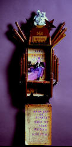

Tom Williams
Bill
Haleyís Accordionist
I know my days are numbered.
All I have to do is look around, backstage
During these shows with other acts.
Guitar, bass, drums, maybe some brass,
Smooth chick and guy singers, much more handsome
Than our own leader,
Whose spit-curl has been getting snickers from the kids in the crowd.
Never mind that weíre usually the only whites performing.
We heard about that kid from Memphis,
ìThe Hillbilly Cat,î they call him.
But Bill says not to worry. Weíve got the world by the tail.
I try to believe him, but am starting to hear
Some boos for our sound.
Hecklers shout, ìSpeed it up, dadî
Or ìShut off that clankety-clank.î
And I guess theyíre going to be the ones
Who decide our fate.
Already our sides arenít charting as high
Though no one mentions it.
Those kids in the crowdó
They donít dress like us.
They seem younger every night.
I watch for when the music grabs them.
If they donít have a partner, they
Swing imaginary drumsticks,
Pound phantom piano keys,
Strum chords only they can hear.
None look my way, or, for that matter,
At our pedal-steel player.
We may as well be backstage for all the attention we get.
Sometimes Bill looks my way,
Shaking his head like a bagpipe was in my hands.
But this is itówhat no one else getsó
And likely never will:
I wouldnít trade my box for anything.
Bill may ask me to leave, our pedal steel player, too,
But the music still grabs me
So hard Iím glad Iíve got something heavy
To hold on to.
|

My Daddy Always Smoked Cigars
by Nancy Dunaway |
{kind=link}